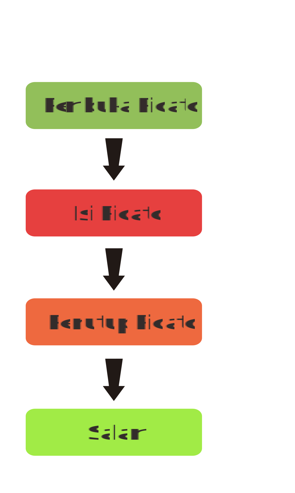

Teks Pidato.
Mempelajari teks pidato

Apa Itu Teks Pidato?
Teks pidato merupakan sebuah teks yang berisi gagasan, pendapat, dan pengetahuan terhadap suatu hal yang nantinya akan disampaikan di depan umum.
Struktur Teks Pidato
Apa Saja Ya?

-
1
Pembuka Pidato
Pembuka pidato terbagi menjadi 3, yaitu salam pembuka; ucapan penghormatan; ucapan syukur; dan pengantar ke topik utama -
2
Isi Pidato
Berisi hal-hal penting yang akan disampaikan -
3
Penutup Pidato
Berisi kesimpulan dari hal yang disampaikan, permintaan maaf jika terjadi kesalahaan saat menyampaikan suatu hal, dan salam penutup -
4
Salam
Ketahui Kaidah Kebahasaan
Teks Pidato
Semangat mengahadapi New Normal? Boleh kok, asal tetap patuhi protokol kesehatan ya! Seperti yang kita ketahui penerapan New Normal membuat kita menjadi lebih longgar untuk beraktivitas di luar rumah, namun kita juga harus ingat bahwa saat ini pandemi masih berlangsung. Kita turut andil dalam menekan penyebaran virus Covid-19 ini, maka dari itu patuhi protokol kesehatan sebagai bentuk cinta kita terhadap tanah air. Terapkan protokol berikut jika masih ingin selamat dari eliminasi alam ini: